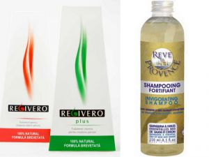

17 sfaturi pentru creșterea părului pe care ar trebui să le cunoști cu siguranță
 tag on every page of your site. --> întrebări 0723359593 [email protected] Facebook Instagram Facebook Instagram Logare | Ãnregistrare Articole 0 FIBRE DE PÄ‚R MAGAZIN DESPRE NOI BLOG Selectează o Pagină
17 sfaturi pentru creșterea părului pe care ar trebui să le cunoști cu siguranță
Scris de Radka
Cresterea parului
septembrie 7, 2020
Ãncetinirea creÈ™terii părului È™i declanÈ™area căderii părului poate avea o varietate de cauze, inclusiv o alimentaÈ›ie inadecvată, lipsa anumitor minerale, utilizarea medicamentelor, tensiune sau stres pe termen lung, boli acute sau cronice, modificări hormonale în organism È™i predispoziÈ›ie genetică.
Deși nu este posibil să avem întotdeauna controlul asupra tuturor factorilor care determină stoparea creșterii părului, ar trebui să ne concentrăm asupra acelor factori pe care îi putem influența. Acest lucru este valabil chiar dacă nu cunoaștem cauza. Este întotdeauna important să creăm condiții favorabile în corpul nostru care să permită regenerarea foliculilor de păr și creșterea părului sănătos.
Cum să accelerăm și să restabilim creșterea sănătoasă a părului?
Ãncercarea unuia sau a tuturor sfaturilor din această listă vă va ajuta să restabiliÈ›i creÈ™terea părului, aspectul sănătos È™i densitatea. Vă sfătuim să încercaÈ›i mai întâi o cale naturală neinvazivă.
1. Igienă temeinică regulată
Pentru ca părul să crească sănătos, trebuie să aibă condițiile create. Spălarea părului ne ajută să creștem părul sănătos, păstrându-ne părul și scalpul curat.
Scalpul poate respira și eliminăm, de asemenea, riscul unei infecții bacteriene sau Candida albicans a pieli.
Nu este necesar să vă spălați părul în fiecare zi, deoarece spălarea frecventă ar putea elimina complet uleiurile naturale esențiale pentru păr de care avem nevoie în mod adecvat. Pentru igiena părului, este important să-l curățați bine și să v ă spălați scalpul și părul și să le uscați bine. Cel mai sănătos este să lăsați părul să se usuce liber și să-l pieptănați ușor cu o perie moale, din fibre naturale.
Nu subestimați mătreața, care poate fi un semn de piele prea uscată sau de infecție Candida albicans a pieli. Pentru hidratarea și emolierea pielii uscate și a părului uscat sunt excelente uleiurile vegetale precum uleiul de argan, uleiul de avocado sau uleiul de jojoba. Pentru a opri formarea de mătreață din cauza infecției Candida albicans, puteți să vă cumpărați din farmacie un șampon anti-mătreață (de exemplu, șampon Nodé DS + sau șampon Kertyol P.S.O.)
2. Folosiți produse pe bază naturală
Nu uitaÈ›i că nu este nimic mai bun pentru creÈ™terea sănătosă a părului decât soluÈ›iile naturale . Dacă pănâ acum nu v-a interesat compoziÈ›ia produselor pentru păr, nu este niciodată prea târziu să vă â€schimbaÈ›i obiceiul†adică să vă interesaÈ›i mai mult de produse pe bază naturală .
Studiați întotdeauna compoziția produselor pentru păr și dacă doriți să consolidați creșterea părului, alegeți produse fără SLS, parabeni și substanțe care încarcă inutil părul.
Prețul vă poate ajuta uneori. Șampoanele de calitate variază, de obicei, la prețuri de la 10 euro în sus, dar datorită sfaturilor noastre, acest șampon nu numai că va rezista mai mult timp, dar această investiție va fi vizibilă în scurt timp și în ceea ce privește părul dvs.
Folosiți șampon cu ingrediente care susțin regenerarea scalpului, stimulează creșterea părului și regenerează foliculii de păr.
Un astfel de exemplu este și GETTIK Volume Pro Shampoo , care nu doar că este delicat pentru părul și scalpul dvs., dar de asemenea, nu conține substanțe care să îngreuneze părul care cauzează deteriorarea părului.
recomandat părului subțire:
Gettik fibre de îndesire a părului
Rezolvați părul subțire în câteva secunde! Un scalp vizibil dispare imediat.
Ãncearcă acum Evaluat la 4.75 din 5 pe baza a 12 evaluări de la clienÈ›i ( 12 recenzii de la clienÈ›i)88.00 lei
3. Nu aranjați părul prea des
Deoarece temperatura ridicată slăbește proteinele părului, încercați să limitați utilizarea ondulatoarelor, a uscătoarelor de păr cu aer cald și a plăci de păr . Expunerea frecventă a părului și a scalpului la căldură puternică poate duce la ruperea și fragilitatea părului și, eventual, la căderea părului.
EvitaÈ›i ondularea permanentă a părului (aÈ™a-numită ondularea permanentă), care constă în îndreptarea chimică a părului sau ondularea părului. Ãn timpul ondulării permanente, legăturile interne ale părului sunt perturbate È™i rearanjate într-o nouă formă a părului. Ãn acest fel, părul slăbeÈ™te È™i își pierde strălucirea.
Nu folosiți vopsele clasice pentru păr, substanțe chimice sau înălbitori. Utilizarea lor frecventă este dăunătoare părului și a scalpului. Nu vă vopsiți părul mai des decât o dată la 6-8 săptămâni. O alternativă la vopsele de păr este colorantul natural henna, care se bazează pe extractul din frunzele plantei henna albă (Lawsonia inermis). Decolorarea părului îndepărtează pigmentul natural atunci când substanțele chimice de albire intră în cuticula părului. Acest lucru schimbă structura părului, deci slăbește părul și este predispus la deteriorare.
Știm cât de dificil va fi evitarea unor produse È™i aranjarea părului. Dar dacă doriÈ›i cu adevărat să stimulaÈ›i creÈ™terea părului , nu există altă modalitate 🙂 Dacă reduceÈ›i aranjarea excesivă È™i stilizarea, părul dvs. va fi mai sănătos È™i veÈ›i scăpa de vârfurile despicate . ÃncercaÈ›i mai întâi să limitaÈ›i stilizarea părului la 4 ori pe săptămână chiar dacă credem că este încă prea mult, cu toate acestea deja veÈ›i vedea primele succese .
4. Tundeți-vă părul la fiecare 6-8 săptămâni
DeÈ™i pare un paradox, dacă doriÈ›i ca părul dvs. să crească, trebuie să-l tundeÈ›i. Astfel veÈ›i tunde vârfurile moarte È™i deteriorate. De fapt, aceasta este regula de bază dacă doriÈ›i cu adevărat să stimulaÈ›i creÈ™terea părului . Da, părul creÈ™te de la rădăcină È™i tunderea vârfurilor nu este singura modalitate pentru a accelera creÅŸterea părului. Dar dacă nu aveÈ›i grijă de vărfurile părului dvs. aceasta poate duce la distrugerea părului È™i la părul care nu va arăta sănătos (È™i nu doriÈ›i să vi se întâmple acest lucru, nu?). Tunderea părului cu 7 mm la fiecare 6-8 săptămâni este un lucru excelentă! Am primit multe feedback-uri cu privire la acest sfat, iar 9 din 10 experÈ›i sunt de acord: â€trebuie să aveÈ›i grijă de vârfurile deteriorate sau altfel veÈ›i plăti pentru asta!†AmintiÈ›i-vă doriÈ›i ca părul dvs. să fie mai lung È™i mai sănătos, nu doar mai lung!
5. ÃncercaÈ›i să evitaÈ›i stresul
Stresul poate provoca o varietate de simptome fizice precum greață, insomnie, transpiraÈ›ie excesivă, diaree, presiune toracică È™i încetinirea creÅŸterii a părului. Ãn ceea ce priveÈ™te stresul sau anxietate pe termen lung, părul cade uniform de pe întreaga suprafață a capului, ceea ce duce la o pierdere totală a densității părului. După reducerea stresului, tot părul creÈ™te înapoi .
Stresul pe termen lung este periculos, care se transformă în anxietate de zi cu zi È™i tensiune neîntreruptă. Ãn primul rând, încercaÈ›i să identificaÈ›i cauza principală a stresului sau a anxietății. Acest lucru poate fi suprasolicitare, cerinÈ›ele supraveghetorului, termenele limită pentru proiecte, relaÈ›ii nerezolvate cu partenerul sau familia, relaÈ›ii de vecinătate, suferință psihică pentru situaÈ›ia financiară sau starea medicală.
După aflarea cauzei stresului, încercaÈ›i să abordaÈ›i activ situaÈ›ia. Dacă soluÈ›ia standard repetată nu a adus efectul dorit, decideÈ›i să faceÈ›i un pas mai radical. Ãn timpul zilei, întotdeauna vă faceÈ›i timp pentru dvs, când pur È™i simplu vă opriÈ›i È™i vă relaxeaÈ›i. DeÈ™i probabil în zilele noastre nu este posibil să trăim complet fără stres, aceasta vă va ajuta să obÈ›ineÈ›i treptat bunăstarea mentală.
6. Nu subestimați apa
Apa ajută la eliminarea substanțelor dăunătoare și a toxinelor din organism. Este o metodă simplă și naturală , care este în final benefică pentru creșterea mai rapidă și mai sănătoasă a părului . Dacă beți aproximativ 8 pahare de apă pe zi, acest lucru va aprecia nu numai organismul dvs. dar și părul dvs. va fi mai puternic. Apa potabilă hidratează, de asemenea, părul din interior. Părul hidratat este părul fericit, deoarece părul uscat se rupe  mult mai des.
7. Stimulați circulaţia sângelui în zona scalpului
Nu spunem să vă pieptănaÈ›i părul prea des. AfirmaÈ›ia â€de 100 de ori pe zi†nu este adevărată. Cu toate acestea, pieptănarea corespunzătoare dimineaÈ›a È™i seara va ajuta la stimularea circulaÈ›iei sângelui a pielii È™i la circulaÈ›ia sângelui, ceea ce va reînvia foliculii. Nu vă pieptănaÈ›i părul cât este încă umed. AÈ™teptaÈ›i până când va fi complet uscat. Ãn caz contrar, se pot deteriora (în special carcasa lor) sau se pot rupe. FolosiÈ›i pieptăn în locul unei perii. Vă recomandăm să încercaÈ›i masajul scalpului cu micro-ace (derma-roller). Ãn fiecare seară, vă puteÈ›i stimula circulaÈ›iei sângelui a pielii È™i mai aprofundat. Mai multe informaÈ›ii aici .
8. Alimente cu creșterea părului
ȘtiaÈ›i că ceea ce mâncaÈ›i afectează È™i creÈ™terea părului? Dacă veÈ›i mănânca alimente bogate în proteine , în curând veÈ›i observa o îmbunătățire a calității părului dvs, precum È™i creÈ™terea mai rapidă a acestora. Ãn plus, pielea dvs. se va purifica frumos È™i la prima vedere va părea mai tânără.
Alimentele pe care le mânca în timpul zilei afectează în mod semnificativ sănătatea noastră generală și, prin urmare, și creșterea sănătoasă a părului nostru. Un organism căruia i se administrează o cantitate suficientă de micronutrienți și macronutrienți este capabil să producă păr puternic și sănătos decât un organism subnutrit . Pentru oprirea căderii părului este important aportul de fier, proteine ​​vegetale sau proteine animale, vitamina C, acizii grași omega-3, biotina. Printre mâncăruri bogate în proteine ​​includem pește, leguminoase, ouă, legume și fructe.
O dietă sănătoasă echilibrată regulată, bogată în fructe și legume proaspete vă va asigura un aport caloric suficient și, de asemenea, un aport suficient de vitamine, minerale, oligoelemente și aminoacizi esențiali. Organismul are nevoie de toate aceste substanțe pentru buna funcționare, pentru a depăși oboseala și bolile, regenerarea și creșterea părului.
Ãn plus, dacă reduceÈ›i consumul de alimente nesănătoase È™i creÈ™teÈ›i aportul de alimente sănătoase, rezultatele vor fi vizibile imediat.
9. Stil de viață sănătos
O parte a vieÈ›i sănătoase este, de asemenea, un stil de viață sănătos, în special somn suficient, exerciÈ›ii fizice regulate, minimizarea factorilor de stres, reducerea alcoolului È™i a fumatului. Ãn timpul somnului, organismul se regenerează È™i odată cu acesta È™i foliculii de păr se regenerează . MiÈ™carea stimulează circulaÈ›ia sângelui în organism, care deasemenea stimulează circulaÈ›ia sângelui în scalp È™i foliculii de păr . Când organismul este în repaus È™i nu este otrăvit constant de substanÈ›e nocive, acesta poate funcÈ›iona optim È™i poate asigura funcÈ›ionarea corespunzătoare a funcÈ›iilor fiziologice.
10. Uleiuri și masajul scalpului
Acesta este unul dintre cele mai bune sfaturi pentru a vă ajuta părul să crească și chiar funcționează! Doar încălziți tratamentul cu ulei, masați pielea, lăsați-l să-și facă efectl un pic și veți vedea diferența – părul dvs. va fi mai dens, mai delicat și mai lung . Deși vă puteți cumpăra și utiliza produse care conțin ulei, uleiul de casă este întotdeauna o opțiune mai bună. Uleiul de jojoba, de cocos, măsline și multe altele pe care le preferați vor face minuni cu părul dvs ; doar le încălziți și apoi aplicați.
11. Uleiuri esențiale și creșterea părului
Dacă doriți ca părul dvs. să crească mai repede, uleiurile esențiale vă pot ajuta cu adevărat. Pot fi folosite pe întregul corp, dar cum să le folosiți pe păr? Vă recomand să amestecați 3 picături de lavandă, 3 picături de rozmarin, 2 picături de cimbru și uleiuri de cedru împreună cu unele uleiuri de jojoba. Aplicați acest amestec de ulei pe păr și așteptați câteva minute pentru rezultat. Prin aplicarea repetată veți obține un aspect mai sănătos al părului dvs. și astfel veți stimula creșterea lor.
12. Vitamine pentru creșterea părului
Părul dvs. poate rămâne uneori foarte uscat, fragil si deteriorat, mai ales datorită furnizarii insuficiente de vitamine . Este vorba în principal despre vitamina B , care are un efect benefic nu numai asupra părului, ci și asupra pielii. Părul își extrage din vitamina B elementele necesare pentru creșterea sănătoase a acestuia. Nu trebuie să neglijați deasemenea și vitaminele A și C , datorită cărora părul dvs. va fi mai lung și mai puternic. De asemenea, părul puteți hrăni și din exterior de exemplu, cu suc de cartofi (dar mai multe despre asta într-unul alt sfat). Vitaminele solubile vor ajuta și ele, dar cea mai bună opțiune este să le primiți consumând alimente bogate în vitamine.
13. Evitați produsele pe bază de siliciu
Posibil aÈ›i auzit deja că produsele cu conÈ›inut de siliciu ajută părul să fie mai sănătos să crească mai repede È™i să fie mai strălucitor. Din păcate opusul este adevărat . Siliciul înfășoară părul È™i îl împiedică să respire, înfundă foliculii de păr È™i nu lasă să treacă umiditatea, ceea ce duce la încetinirea creÈ™terii părului È™i la slăbirea generală a acestuia. Da, părul poate părea la prima vedere mai sănătos È™i mai frumos , dar pe termen lung, părul se distruge. Acest lucru este valabil È™i pentru cele mai luxoase preparate care conÈ›in siliciu. Ãnainte de a începe să vă goliÈ›i portofelul, încercaÈ›i mai întâi unul dintre sfaturile noastre!
14. Nu aplicați niciodată balsam pe scalp
Ca È™i în cazul È™ampoanelor, acordaÈ›i atenÈ›ie aplicării balsamului . Dacă doriÈ›i să faceÈ›i acest lucru cu adevărat corect , puneÈ›i-vă părul într-o coadă È™i foloseÈ™te balsamul doar pe partea â€de jos†a părului. Dacă este posibil, lăsaÈ›i balsamul să-È™i facă efectul timp de aproximativ 10 minute, È™i fiÈ›i în camera de aburi (de exemplu în baie în timp ce vă radeÈ›i pe picioare 🙂 ) sau vă înfășuraÈ›i părul într-un prosop. Datorită căldurii, nutrienÈ›ii sunt mai bine absorbiÈ›i , iar rezultatul va fi cu atât mai impresionant. FiÈ›i atenÈ›i È™i nu aplicaÈ›i niciodată balsamul pe scalp riscaÈ›i ungerea inutilă a părului È™i înfundarea foliculilor de păr.
15. FiÈ›i atenÈ›i la utilizarea excesivă a È™amponului È™i la â€frecarea†scalpului
Acesta este sfatul numărul unu a majorităţii stiliÅŸtilor pricepuÈ›i. Șamponarea pielii este necesară , dar în ceea ce priveÈ™te scalpul este puÈ›in diferit. Utilizarea excesivă a È™amponului poate usca scalpul, È™i astfel se poate crea mătreaÈ›a. De asemenea, â€frecarea†scalpului cu unghii sau presiunea poate deteriora scalpul. Pentru a elimina resturile produselor de styling, este necesară utilizarea È™amponului. Cu toate acestea, întotdeauna aveÈ›i grijă să folosiÈ›i o cantitate minimă de È™ampon È™i să masaÈ›i uÈ™or pielea cu vârful degetelor . După spălarea uÈ™oară, spălaÈ›i-vă părul cu apă călduță. Dacă vă îngrijorează faptul că folosiÈ›i prea mult È™ampon, cumpăraÈ›i-vă o â€pompă†care va avea grijă să nu depășiÈ›i canitatea potrivită. Pentru părul lung până la umeri, de obicei sunt suficiente 1-2 spray-uri de È™ampon. Nu uitaÈ›i pentru creÈ™terea sănătoasă a părului este pur È™i simplu o necesitate scalpul sănătos !
16. Detectarea efectelor secundare ale medicamentelor
Medicamentele sunt realizate în așa fel pentru a elimina problema principală de sănătate a pacientului. Cu toate acestea, medicamentele pot provoca uneori o serie de reacții adverse. Multe medicamente prescrise în mod obișnuit pot provoca încetinerea temporară a creșterii părului, pot declanșa căderea părului masculin sau feminin sau chiar pot cauza pierderea permanentă a părului. Este posibil ca medicul dumneavoastră să nu menționeze toate efectele secundare ale medicamentului pe care vi le-a prescris, de aceea trebuie să citiți amănunțit prospectul unde sunt aceste informații. Farmacistul la cerere vă va oferi mai multe informații despre acest medicament.
Căderea părului ca efect secundar apare adesea la următoarele tipuri de medicamente:
anticoagulant (reduce formarea cheagurilor de sânge), antimicotice (împotriva microorganismelor fungice â€cu ciuperci“ È™i Candida Albicans), citostatic (preveni creÈ™terea celulelor canceroase) È™i medicamente antiinflamatoare nesteroidiene.
Efectul secundar al căderii părului apare cel mai adesea cu medicamente pentru următoarele probleme de sănătate: acnee, colesterol ridicat, depresie, obezitate, glaucom, gută, hipertensiune arterială, boli hormonale, artrită, boli tiroidiene, ulcere.
Dacă medicul dumneavoastră vă prescrie un medicament sau vă recomandă un anumit medicament fără rețetă, întrebați-l la cele mai frecvente reacții adverse ale medicamentului sau întrebați-l direct dacă medicamentul nu afectează creșterea părului. Dacă da, cereți un medicament alternativ la fel de eficient.
17. Controlul și prevenirea
Scopul controlului părului este detectarea la timp a semnalelor de avertizare. Există întotdeauna o șansă mai bună la succesul tratamentului reușit dacă încetinirea creșterii părului sau starea boli de pielie este identificată la timp.
O dată pe lună, vă numărați câte fire de păr v-a căzut într-o zi. Este îndeajuns decât o să vă numărați părul care v-a căzut în timpul spălării. După spălarea și uscarea completă a părului, verificați cu atenție scalpul.
Ãn primul rând, vă verificaÈ›i scalpul vizual . Pentru a vedea partea din spate a capului utilizaÈ›i două oglinzi. Ãn zonele individuale ale capului (în zona colÈ›urilor, bretonului, în creÈ™tetul capului (vertex), după urechii), observaÈ›i cum se dezvoltă:
linia părului densitatea părului formarea de mătreață producția de sebum formarea iritațiilor sau bășicii înroșirea pielii răni sau sângerare a pielii alte modificări ale structurii pielii (cicatrici, îngroșări)Apoi verificați-vă pielea prin atingere . Cu vârful degetelor masați ușor zona scalpul și fiți atenți la:
sensibilitatea pielii la atingere mâncărime, arsură sau durere neregularitățile pielii scalpului (bubițe)Prin apariția timpurie a unor simptome, putem reacționa imediat la modificările care ar putea afecta negativ creșterea părului sau sănătatea scalpului după un timp.
Dacă în trecut v-a căzut părul excesiv, dar momental situaÈ›ia este stabilă, nu trebuie să aÈ™teptaÈ›i până când părului înceapă să crescă din nou, dar puteÈ›i lua măsuri preventive. AlegeÈ›i-vă un mijloc de prevenire adecvat în funcÈ›ie de tipul de alopecie . Ãn cazul alopeciei androgenică sau alopeciei induse de hormoni, utilizaÈ›i vitamine pentru păr È™i È™ampoane fără substanÈ›e chimice.
by: Radka
Author
← Prev: Căderea părului | 4 paÈ™i care vor garanta succesul Pentru ÃngroÈ™area È™i Reînnoirea creÅŸterii Next: Transplant de păr: 6 lucruri pe care trebuie să le È™tiYou May Also Like
Șampon pentru creșterea părului
mart. 22, 2021
Părul reprezintă o temă constantă în rândul femeilor È™i adesea în rândul bărbaÈ›ilor. Ãntr-o perioadă agitată sau
Blocator DHT
feb. 6, 2021
DHT - dihidrotestosteron Dihidrotestosteron - DHT este o formă foarte activă de testosteron. Este transformat în DHT
Saw palmetto
feb. 2, 2021
Tratamentul căderii părului cauzat de alopecia androgenică se concentrează în principal pe reducerea androgenilor
0 Comentarii
Ãnaintează un Comentariu Anulează răspunsul
Acest site folosește Akismet pentru a reduce spamul. Află cum sunt procesate datele comentariilor tale .
CONTACT
Tel: 0723359593
E-mail: [email protected]
GETTIK RO
Brasov, str. Lanii 128, jud Brasov, Romania
Contactează-neINFO
Recenzii
Ãntrebării È™i răspunsurii
Rambursare pe viata
Livrarea si plata produselor
TOP
Caderea parului
Minoxidil
Cresterea parului
Transplant de par
RECENZII
Elvira 4/5Sunt mulțumit de Gettik, produsul corespunde prezentarii.
o lună ago Irina 5/5Ãn cele din urmă !!! produs genial!
2 luni ago Margit 5/5Am încercat, este perfect
2 luni ago Roxana 5/5Noua mea încredere în sine😊, recomand cu tărieğŸ‘
4 luni ago TOMA IRINA 3/5Am incredere!Ar fi superb
4 luni ago Rebeka 5/5Mă bucur că am descoperit acest produs de îngroșare a firelor de par. Funcționează fantastic.
7 luni ago Doru 5/5Fibrele pentru ingrosarea parului mi-au sporit încrederea. Sunt extrem de mulțumit. Vă mulțumim pentru acest produs.
8 luni ago Adina 5/5FUNCTIONEAZA!
9 luni ago Razvan 5/5Nu am crezut, dar chiar funcționează! Miracol! Chiar și nuanța se potrivește perfect. 100% satisfacție.
11 luni ago Maria 5/5 * o modalitate excelentă de a acoperi zonele cu păr rar
* funcționează grozav
Termeni și condiții  | Politica de confidențialitate  | GDPR  | Responsabilitate
Copyright GETTIK 2021
URMEAZÄ‚ NE
UrmăreÈ™te UrmăreÈ™te UrmăreÈ™te UrmăreÈ™te UrmăreÈ™te Folosim cookie-uri pe site-ul nostru web pentru a vă oferi cele mai relevante experienÈ›e, pentru a vă aminti preferinÈ›ele È™i pentru a vă repeta vizitele. Dând clic pe butonul â€Acceptâ€, acceptaÈ›i utilizarea TOATE cookie-urile. Accept CiteÈ™te mai mult Privacy & Cookies Policy ÃnchidePrivacy Overview
This website uses cookies to improve your experience while you navigate through the website. Out of these, the cookies that are categorized as necessary are stored on your browser as they are essential for the working of basic functionalities of the website. We also use third-party cookies that help us analyze and understand how you use this website. These cookies will be stored in your browser only with your consent. You also have the option to opt-out of these cookies. But opting out of some of these cookies may affect your browsing experience. Necessary Necessary Ãntotdeauna activateNecessary cookies are absolutely essential for the website to function properly. This category only includes cookies that ensures basic functionalities and security features of the website. These cookies do not store any personal information.
Non-necessary Non-necessaryAny cookies that may not be particularly necessary for the website to function and is used specifically to collect user personal data via analytics, ads, other embedded contents are termed as non-necessary cookies. It is mandatory to procure user consent prior to running these cookies on your website.
SALVEAZÄ‚ ȘI ACCEPTÄ‚ 0 0 Cosul meu CoÈ™ul tău este în prezent gol. Ãnapoi la magazin Continua cumparaturile Șampon pentru volum È™i creÈ™terea sănătoasă a părului 250 ml 55.00 lei + Add Fibre pentru păr rar Gettik - pudră (12 g) 88.00 lei + Add Spray pentru fixarea fibrelor Gettik 200 ml 55.00 lei + Add Test 1.00 lei + Add Fibre pentru păr rar Gettik 12g negru 88.00 lei + Add Calculate Shipping Apply Coupon